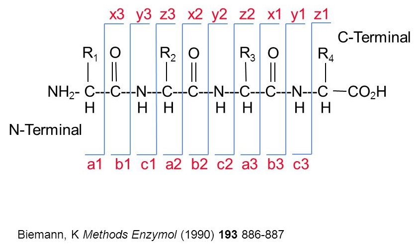
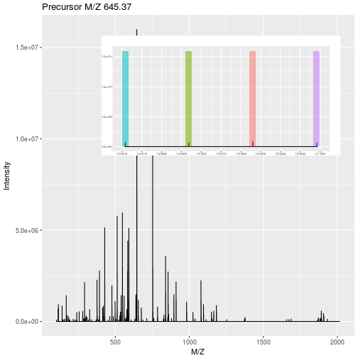
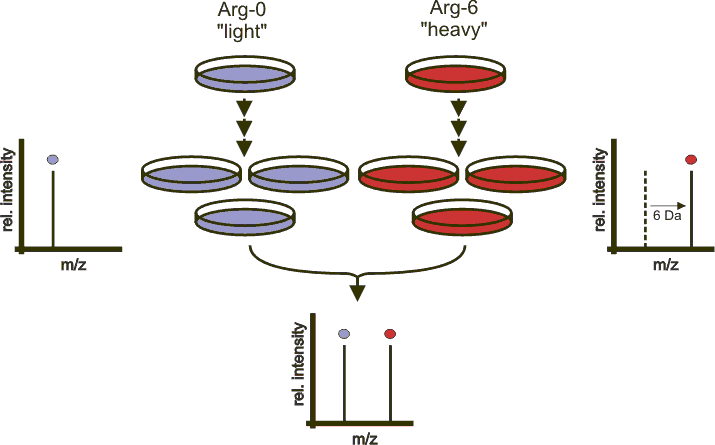

Chapter 7 Mass spectrometry
The objectives of this chapter it to learn how mass spectrometry works and how mass spectrometry data is structured. At the end, students should be familiar with
- Acquisition of spectra over retention time
- Spectra and chromatograms
- MS1 and MS2 spectra and their relation
- Precursor and fragment ions
- Peptide-spectrum matching
- An understanding of the various MS1, MS2, labelled and label-free quantitative approaches.
Proteins as the functional units in all living organisms, and they are highly dynamic. The caterpillar and the resulting butterfly have the same genome. The complement of all the expressed proteins, termed the proteome is however very different.
There are different modalities of the proteome that are of interest. In addition to the presence or amount of protein in a biological samples, it is also important to study the interactions between proteins forming protein-protein complexes, the presence of post-transcriptional modification (such as, for example, phosphorylations), the rate at which proteins are produced and degraded, or where the proteins reside inside a cell.
The technique of choice to study proteins in a high throughput way is mass spectrometry.
A beginner’s guide to mass spectrometry–based proteomics (Sinha and Mann 2020Sinha, Ankit, and Matthias Mann. 2020. “A beginner’s guide to mass spectrometry–based proteomics.” The Biochemist, September. https://doi.org/10.1042/BIO20200057.) is an approachable introduction to sample preparation, mass spectrometry and data analysis.
7.1 Setup
 Figure 7.1: The
Figure 7.1: The Spectra package.
We are going to use the Bioconductor (Huber et al. 2015Huber, W, V J Carey, R Gentleman, S Anders, M Carlson, B S Carvalho, H C Bravo, et al. 2015. “Orchestrating High-Throughput Genomic Analysis with Bioconductor.” Nat Methods 12 (2): 115–21. https://doi.org/10.1038/nmeth.3252.) Spectra
package,
which can be install with the BiocManager package, available from
CRAN. We will also make use of some test data from the msdata
package. Identification data will be handled by the
PSMatch package.
BiocManager::install("msdata")
BiocManager::install("ProtGenerics")
BiocManager::install("Spectra")
BiocManager::install("RforMassSpectrometry/PSMatch")7.2 How does mass spectrometry work?
Mass spectrometry (MS) is a technology that separates charged molecules (ions) based on their mass to charge ratio (M/Z). It is often coupled to chromatography (liquid LC, but can also be gas-based GC). The time an analytes takes to elute from the chromatography column is the retention time.
Figure 7.2: A chromatogram, illustrating the total amount of analytes over the retention time.

An mass spectrometer is composed of three components:
- The source, that ionises the molecules: examples are Matrix-assisted laser desorption/ionisation (MALDI) or electrospray ionisation. (ESI)
- The analyser, that separates the ions: Time of flight (TOF) or Orbitrap.
- The detector that quantifies the ions.
When using mass spectrometry for proteomics, the proteins are first digested with a protease such as trypsin. In mass shotgun proteomics, the analytes assayed in the mass spectrometer are peptides.
Often, ions are subjected to more than a single MS round. After a first round of separation, the peaks in the spectra, called MS1 spectra, represent peptides. At this stage, the only information we possess about these peptides are their retention time and their mass-to-charge (we can also infer their charge be inspecting their isotopic envelope, i.e the peaks of the individual isotopes, see below), which is not enough to infer their identify (i.e. their sequence).
In MSMS (or MS2), the settings of the mass spectrometer are set automatically to select a certain number of MS1 peaks (for example 20). Once a narrow M/Z range has been selected (corresponding to one high-intensity peak, a peptide, and some background noise), it is fragmented (using for example collision-induced dissociation (CID), higher energy collisional dissociation (HCD) or electron-transfer dissociation (ETD)). The fragment ions are then themselves separated in the analyser to produce a MS2 spectrum. The unique fragment ion pattern can then be used to infer the peptide sequence using de novo sequencing (when the spectrum is of high enough quality) of using a search engine such as, for example Mascot, MSGF+, …, that will match the observed, experimental spectrum to theoratical spectra (see details below).
Figure 7.3: Schematics of a mass spectrometer and two rounds of MS.

The animation below show how 25 ions different ions (i.e. having different M/Z values) are separated throughout the MS analysis and are eventually detected (i.e. quantified). The final frame shows the hypothetical spectrum.
Figure 7.4: Separation and detection of ions in a mass spectrometer.

The figures below illustrate the two rounds of MS. The spectrum on the left is an MS1 spectrum acquired after 21 minutes and 3 seconds of elution. 10 peaks, highlited by dotted vertical lines, were selected for MS2 analysis. The peak at M/Z 460.79 (488.8) is highlighted by a red (orange) vertical line on the MS1 spectrum and the fragment spectra are shown on the MS2 spectrum on the top (bottom) right figure.
Figure 7.5: Parent ions in the MS1 spectrum (left) and two sected fragment ions MS2 spectra (right).

The figures below represent the 3 dimensions of MS data: a set of spectra (M/Z and intensity) of retention time, as well as the interleaved nature of MS1 and MS2 (and there could be more levels) data.
Figure 7.6: MS1 spectra (blue) over retention time (left). MS2 spectra (pink) interleaved between two MS1 spectra (right),
7.3 Reading and accessing MS data
Let’s start by accessing an MS raw data file from the msdata
package. The proteomics() function checks the package content for a
file matching the "2014" pattern and returns its full name.
basename(f <- msdata::proteomics(pattern = "2014", full.names = TRUE))## [1] "TMT_Erwinia_1uLSike_Top10HCD_isol2_45stepped_60min_01-20141210.mzML.gz"There exist a set of community-maintained file formats for mass
spectrometry data. The most widely used formats are mzML and
mzXML, both relying on the
XML markup
language. These two formats, as well as others, can be read into R as
Spectra objects:
library("Spectra")
ms <- Spectra(f)
ms## MSn data (Spectra) with 7534 spectra in a MsBackendMzR backend:
## msLevel rtime scanIndex
## <integer> <numeric> <integer>
## 1 1 0.4584 1
## 2 1 0.9725 2
## 3 1 1.8524 3
## 4 1 2.7424 4
## 5 1 3.6124 5
## ... ... ... ...
## 7530 2 3600.47 7530
## 7531 2 3600.83 7531
## 7532 2 3601.18 7532
## 7533 2 3601.57 7533
## 7534 2 3601.98 7534
## ... 33 more variables/columns.
##
## file(s):
## TMT_Erwinia_1uLSike_Top10HCD_isol2_45stepped_60min_01-20141210.mzML.gzOnce a Spectra object has been created, it can be queried and
manipulated using a whole set of accessor functions, documented in the
Spectra-class
documentation.
Spectra objects can be subset with the [ operator. In addition to
the raw data (the M/Z and intensity values) that compose the
individual scans, the annotation of each spectrum is available as a
single and large table called spectraData, composed of a set of
spectraVariables columns.

Figure 7.7: Schematic representation of what is referred to by MS data: a collection of spectra and a table containing spectrum-level annotations.
► Question
Create a Spectra object as described above and reply to the
following questions:
- Use the
length()function to check how many spectra have been acquired in this MS run? - How many MS levels are there in this run? You can use the
msLevel()accessor to get the MS level of all the scans. - How many spectra of each MS level are there?
- For how long was the data acquired? Use the
rtime()accessor to obtain the retention times. - Which MS2 spectrum has the highest precursor intensity? The
precursor intensities can be retrieved with the
precursorIntensity()function. - What is that’s spectrum retention time and precuror M/Z? Use the
precursorMz()andrtime()accessors. - Visualise that spectrum using using the
plotSpectra()function. Reproduce that figure youself by accessing the scan’s raw data with theintensity()andmz()functions.
The figure below show is an illustration of how mass spectrometry works:
The chromatogram at the top display to total ion current along the retention time. The vertical line identifies one scan in particular at retention time 1800.68 seconds (the 2807th scan).
The spectra on the second line represent the full MS1 spectrum marked by the red line. The vertical lines identify the 10 precursor ions that where selected for MS2 analysis. The zoomed in on the right shows one specific precursor peak.
The MS2 spectra displayed along the two rows at the bottom are those resulting from the fragmentation of the 10 precursor peaks identified by the vertical bars above.

► Question
Reproduce the figure above.
► Solution

7.4 Identification: matching spectra to peptides
The raw data is still a long way of obtaining biologically relevant proteomics data. The first step is to identify the peptides that have been acquired in the MS. Peptide identification works by comparing expected and observed spectra. As shown below, when a precursor peptide ion is fragmented in a CID cell, it breaks at specific bonds, producing sets of peaks (a, b, c and x, y, z) that can be predicted.
Figure 7.8: Peptide fragmentation.
It is thus possible to calculate the expected set of fagment peaks for a given peptide, such as THSQEEMQHMQR below and match these theoretical fragments to those observed in MS2 spectra.
library("PSMatch")
calculateFragments("THSQEEMQHMQR")## mz ion type pos z seq
## 1 102.0550 b1 b 1 1 T
## 2 239.1139 b2 b 2 1 TH
## 3 326.1459 b3 b 3 1 THS
## 4 454.2045 b4 b 4 1 THSQ
## 5 583.2471 b5 b 5 1 THSQE
## 6 712.2897 b6 b 6 1 THSQEE
## 7 843.3301 b7 b 7 1 THSQEEM
## 8 971.3887 b8 b 8 1 THSQEEMQ
## 9 1108.4476 b9 b 9 1 THSQEEMQH
## 10 1239.4881 b10 b 10 1 THSQEEMQHM
## 11 1367.5467 b11 b 11 1 THSQEEMQHMQ
## 12 175.1190 y1 y 1 1 R
## 13 303.1775 y2 y 2 1 QR
## 14 434.2180 y3 y 3 1 MQR
## 15 571.2769 y4 y 4 1 HMQR
## 16 699.3355 y5 y 5 1 QHMQR
## [ reached 'max' / getOption("max.print") -- omitted 42 rows ]In a full experiment, all possible peptides from the proteome of interest (such as databases that can be downloaded from the UniProt site15 The Universal Protein Resource (UniProt) is a freely and accessible comprehensive resource for protein sequence and annotation data.) are compared to the millions of observed spectra.
The matching between millions of observed and possible spectra causes real challenges due to the large search space and the risk of false positives. See (Käll et al. 2008Käll, L, J D Storey, M J MacCoss, and W S Noble. 2008. “Posterior Error Probabilities and False Discovery Rates: Two Sides of the Same Coin.” J Proteome Res 7 (1): 40–44. https://doi.org/10.1021/pr700739d.) for further reading.
7.4.1 Handling identification results
Identification results are also stored in an XML-based file format,
called mzIdentML (or mzId for short). Below, we access such a file
available in the msdata package and load its content into R with the
PSMs::PSM() function.
basename(idf <- msdata::ident(full.names = TRUE))## [1] "TMT_Erwinia_1uLSike_Top10HCD_isol2_45stepped_60min_01-20141210.mzid"id <- PSM(idf)
head(id)## PSM with 6 rows and 35 columns.
## Spectra: 6 unique
## db: 4 target, 2 decoy
## ranks: 1:6
## Peptides: 6 unique, 0 multiple
## Proteins: 6
## names(35): sequence spectrumID ... subReplacementResidue subLocation► Question
How many of PSM entries originate from the real and decoy databases?
► Solution
► Question
Visualise the MS.GF.RawScore densitues for the real and decoy
hits. Interprete the figures.
► Solution
Before proceeding, we want to only focus on relevant peptides. The
filterPSMs() function will remove decoy peptides, only keep PSMs of
rank 1 (i.e. the best respective matches), and remove peptides that
match multiple proteins16 A more rigorous processing of these identifications would
be required, for instance a way to evalutation the false discovery
rate in these hits (which we know from above is very high). The
MSnID is highly recommended..
id <- filterPSMs(id)## Starting with 5802 PSMs:## Removed 2896 decoy hits.## Removed 155 PSMs with rank > 1.## Removed 85 non-proteotypic peptides.## 2666 PSMs left.For simplicity, we are also going to ignore the location of the
peptide modifications by removing the modLocation column.
id$modLocation <- NULL
id <- unique(id)Now that we have matching raw data (the ms variable) and
identification data (the id variable), it is possible to join the
latter to the former’s spectra data:
ms <- joinSpectraData(ms, id,
by.x = "spectrumId",
by.y = "spectrumID")
ms## MSn data (Spectra) with 7534 spectra in a MsBackendMzR backend:
## msLevel rtime scanIndex
## <integer> <numeric> <integer>
## 1 1 0.4584 1
## 2 1 0.9725 2
## 3 1 1.8524 3
## 4 1 2.7424 4
## 5 1 3.6124 5
## ... ... ... ...
## 7530 2 3600.47 7530
## 7531 2 3600.83 7531
## 7532 2 3601.18 7532
## 7533 2 3601.57 7533
## 7534 2 3601.98 7534
## ... 66 more variables/columns.
##
## file(s):
## TMT_Erwinia_1uLSike_Top10HCD_isol2_45stepped_60min_01-20141210.mzML.gzWe are going to conlude this part by annotating an MS2 spectrum with the calculated peptide fragment.
► Question
Choose two MS2 spectra that have an
MS.GF.RawScoregreater than 100 and are matched to the same peptide sequence.Then visualise them annotating their fragment ion with its fragment ions by passing the
addFragmentsfunction toplotSpectra’slabelsargument.
► Solution

From the list of identified peptides, it is then necessary to infer the most provable proteins that were present in the biological sample. Protein inference is a difficult task, as peptides often match multiple proteins (either different isoforms or proteins stemming from different gene but with identical domains), which leads to the definition of protein groups, i.e. sets of proteins that can’t be distinguished with the set of identified peptides at hand. See (Nesvizhskii and Aebersold 2005Nesvizhskii, A I, and R Aebersold. 2005. “Interpretation of Shotgun Proteomic Data: The Protein Inference Problem.” Mol Cell Proteomics 4 (10): 1419–40. https://doi.org/10.1074/mcp.R500012-MCP200.) for further reading.
7.5 Quantitative proteomics
The last step of MS data processing is to quantify peptide abundances in the biological samples. The table below summarises the different possibilites depending whether the proteins or peptides are labelled, and whether the quantitation is performed in MS1 or MS2.
| Label-free | Labelled | |
|---|---|---|
| MS1 | XIC | SILAC, 15N |
| MS2 | Counting | iTRAQ, TMT |
7.5.1 Label-free MS2: Spectral counting
In spectral counting, on simply counts the number of quantified peptides that are assigned to a protein.
Figure 7.11: Spectral counting. Figure from the Pbase package.

7.5.2 Labelled MS2: Isobaric tagging
Isobaric tagging refers to the labelling using isobaric tags, i.e. chemical tags that have the same mass and hence can’t be distinguish by the spectrometer. The peptides of different samples (4, 6, 10, 11 or 16) are labelled with different tags and combined prior to mass spectrometry acquisition. Given that they are isobaric, all identical peptides, irrespective of the tag and this the sample of origin, are co-analysed, up to fragmentation prior to MS2 analysis. During fragmentation, the isobaric tags fall of, fragment themselves, and result in a set of sample specific peaks. These specific peaks can be used to infer sample-specific quantitation, while the rest of the MS2 spectrum is used for identification.
Figure 7.12: iTRAQ 4-plex isobaric tagging. Tandem Mass Tags (TMT) offer up to 16 tags.
7.5.3 Label-free MS1: extracted ion chromatograms
In label-free quantitation, the precursor peaks that match an identified peptide are integrated of retention time and the area under that extracted ion chromatogram is used to quantify that peptide in that sample.
Figure 7.13: Label-free quantitation. Figure credit Johannes Rainer.
.](figs/chrompeaks.png)
7.5.4 Labelled MS1: SILAC
In SILAc quantitation, sample are grown in a medium that contains heavy amino acids (typically arginine and lysine). All proteins gown in this heavy growth medium contain the heavy form of these amino acids. Two samples, one grown in heavy medium, and one grown in normal (light) medium are then combined and analysed together. The heavy peptides precursor peaks are systematically shifted compared to the light ones, and the ratio between the height of a heavy and light peaks can be used to calculate peptide and protein fold-changes.
Figure 7.14: Silac quantitation. Figure credit Wikimedia Commons.
These different quantitation techniques come with their respective benefits and distinct challenges, such as large quantities of raw data processing, data transformation and normalisation, missing values, and different underlying statistical models for the quantitative data (count data for spectral counting, continuous data for the others).
The next chapter will focus on the handling and processing of quantitative proteomics data.
Page built: 2021-11-05 using R version 4.1.2 (2021-11-01)